Topic 30: Ensemble Methods#
onl01-dtsc-ft-022221
05/12/21
Learning Objectives#
Discuss the various types of ensembles methods
Compare and contrast them and their advantages/disadvantages
Activity: Mini-Project on Iowa Prisoner Recividism
Discuss feature engineering.
Create Baseline models
Dummy
DecisionTree
Review GridSearchCV
Apply various ensemble methods.
RandomForests
Bagging
ExtraTrees
XGBoost
Dealing with imbalanced classes with categorical features.
Quick overview of Cross Validation methods (other than GridSearch) + saving models. (If there’s time).
IF we don’t get to it:
Solution code in
Notes rep>Phase_3>scratch_notebooks>topic_29_decision_trees_v2-with_crossval_model_saving.ipynb(look for the header with a ⭐️)
If there’s time left:
Option 1: Attempt a meta-classifier from our best models.
Option 2: Moving functions to .py files.
Option 3: Quick Intro to Finding a Dataset for the Project
Questions?#
Ensemble Methods: Overview#
Ensemble Methods take advantage of the delphic technique (or “wisdom of crowds”) where the average of multiple independent estimates is usually more consistently accurate than the individual estimates.
Types of Ensembles#
Bootstrap Aggregation (Bagging)
Bagging Classifier
Random Forests
Gradient Boosting:
Adaboost
Gradient Boosted Trees
XGBoost
Model Stacking A.K.K. Meta-Ensembling
VotingClassifer
StackingClassifier
Bootstrap Aggregation (Bagging)#
 The process for training an ensemble through bootstrap aggregation is as follows:
The process for training an ensemble through bootstrap aggregation is as follows:
Grab a sizable sample from your dataset, with replacement
Train a classifier on this sample
Repeat until all classifiers have been trained on their own sample from the dataset
When making a prediction, have each classifier in the ensemble make a prediction
Aggregate all predictions from all classifiers into a single prediction, using the method of your choice

Random Forests#

Because decision trees are greedy algorithms, every tree given same data would make same conclusions.
In addition to bagging, random forests use subspace sampling

Benefits and drawbacks#
Benefits#
Strong performance Because this is an ensemble algorithm, the model is naturally resistant to noise and variance in the data, and generally tends to perform quite well.
Interpretability: each tree in the random forest is a Glass-Box Model (meaning that the model is interpretable, allowing us to see how it arrived at a certain decision), the overall random forest is, as well!
Drawbacks#
Computational complexity: On large datasets, the runtime can be quite slow compared to other algorithms.
Memory usage: Random forests tend to have a larger memory footprint that other models. It’s not uncommon to see random forests that were trained on large datasets have memory footprints in the tens, or even hundreds of MB.
Boosting / Gradient Boosted Trees#
Weak learners#
All the models we’ve learned so far are Strong Learners – models with the goal of doing as well as possible on the classification or regression task they are given.
The term Weak Learner refers to simple models that do only slightly better than random chance.
Boosting algorithms start with a single weak learner (usually trees), but technically, any model will do.
Boosting works as follows:
Train a single weak learner
Figure out which examples the weak learner got wrong
Build another weak learner that focuses on the areas the first weak learner got wrong
Continue this process until a predetermined stopping condition is met, such as until a set number of weak learners have been created, or the model’s performance has plateaued
Adaboost & Gradient Boosted Trees#
Adaboost (Adaptive Boosting)#
Key Takeaway: Adaboost creates new classifiers by continually influencing the distribution of the data sampled to train each successive learner.
Uses subsampling with weighted-probabilities for incorrect predictions to be included in subsequent weak learner

Gradient Boosted Trees#
More advanced form - uses gradient descent.
Trains successive trees on the residuals

Differences between Gradient Boosting and Random Forests#
Independent vs iterative
in Random Forests one tree is unaffacted by another.
in Boosting mode each tree is iteratively created to address the prior tree’s weaknesses.
Weak vs Strong
In a random forest, each tree is a strong learner – they would do just fine as a decision tree on their own.
In boosting algorithms, trees are artificially limited to a very shallow depth (usually only 1 split)
to ensure that each model is only slightly better than random chance.
Aggregate Predictions:
in RF each tree votes
in boosting models trees are given weight for being good at “hard tasks”
Modeling Stacking / Meta-Ensembling#
Model stacking is when you use the predictions of one model as the input to another model.

Activity: Predicting Recidivism in Iowa Prisoners#
OBTAIN#
Iowa has a major problem with recidivism, where ~38% of all inmates released from prison wind up back in jail after returning to a life of crime (AKA recidivism).
Dataset contains information on released prisoners and if they returned to prison within 3 years of being release.
Dataset can be found on Kaggle, which was extracted from Iowa’s data portal.
We will be using a partially pre-processed version of the dataset (columns have been renamed/simplified).

import matplotlib.pyplot as plt
import seaborn as sns
import pandas as pd
import numpy as np
import plotly.express as px
import plotly.graph_objects as go
import warnings
warnings.filterwarnings('ignore')
plt.style.use('seaborn-notebook')
# raw_data = 'https://raw.githubusercontent.com/jirvingphd/dsc-3-final-project-online-ds-ft-021119/master/datasets/FULL_3-Year_Recidivism_for_Offenders_Released_from_Prison_in_Iowa.csv'
# renamed_data = 'https://raw.githubusercontent.com/jirvingphd/dsc-3-final-project-online-ds-ft-021119/master/datasets/Iowa_Prisoners_Renamed_Columns_fsds_100719.csv'
renamed_data='./Iowa_Prisoners_Renamed_Columns_fsds_100719.csv'
df = pd.read_csv(renamed_data,index_col=0)
## Drop unwanted cols using year
df = df.drop(columns=['yr_released','report_year'])
df.head()
| race_ethnicity | age_released | crime_class | crime_type | crime_subtype | release_type | super_dist | recidivist | target_pop | sex | |
|---|---|---|---|---|---|---|---|---|---|---|
| 0 | Black - Non-Hispanic | 25-34 | C Felony | Violent | Robbery | Parole | 7JD | Yes | Yes | Male |
| 1 | White - Non-Hispanic | 25-34 | D Felony | Property | Theft | Discharged – End of Sentence | NaN | Yes | No | Male |
| 2 | White - Non-Hispanic | 35-44 | B Felony | Drug | Trafficking | Parole | 5JD | Yes | Yes | Male |
| 3 | White - Non-Hispanic | 25-34 | B Felony | Other | Other Criminal | Parole | 6JD | No | Yes | Male |
| 4 | Black - Non-Hispanic | 35-44 | D Felony | Violent | Assault | Discharged – End of Sentence | NaN | Yes | No | Male |
df.info()
<class 'pandas.core.frame.DataFrame'>
Int64Index: 26020 entries, 0 to 26019
Data columns (total 10 columns):
# Column Non-Null Count Dtype
--- ------ -------------- -----
0 race_ethnicity 25990 non-null object
1 age_released 26017 non-null object
2 crime_class 26020 non-null object
3 crime_type 26020 non-null object
4 crime_subtype 26020 non-null object
5 release_type 24258 non-null object
6 super_dist 16439 non-null object
7 recidivist 26020 non-null object
8 target_pop 26020 non-null object
9 sex 26017 non-null object
dtypes: object(10)
memory usage: 2.2+ MB
SCRUB#
Null values (fill or drop)
Data Types (finding categorical variables)
Inspect the value_counts/labels of categoricals
Scaling or lack-off
One hot encoding
# !pip install missingno fsds
## Check null values
import missingno
missingno.matrix(df)
plt.show()
null_check = pd.DataFrame({
'#null':df.isna().sum(),
'%null':round(df.isna().sum()/len(df)*100,2)
})
null_check
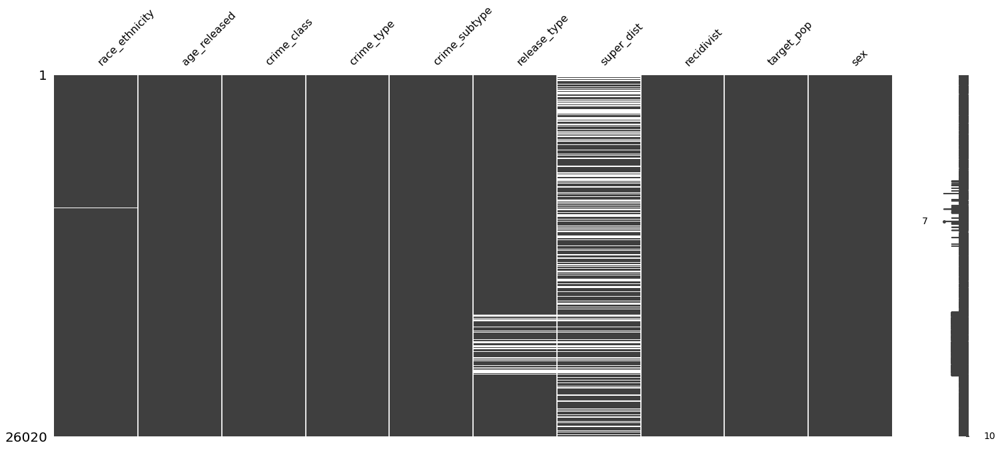
| #null | %null | |
|---|---|---|
| race_ethnicity | 30 | 0.12 |
| age_released | 3 | 0.01 |
| crime_class | 0 | 0.00 |
| crime_type | 0 | 0.00 |
| crime_subtype | 0 | 0.00 |
| release_type | 1762 | 6.77 |
| super_dist | 9581 | 36.82 |
| recidivist | 0 | 0.00 |
| target_pop | 0 | 0.00 |
| sex | 3 | 0.01 |
## inspect categories
dashes = '---'*20
for col in df.columns:
print(dashes)
print(f"Value Counts for {col}:")
display(df[col].value_counts(dropna=False))
------------------------------------------------------------
Value Counts for race_ethnicity:
White - Non-Hispanic 17584
Black - Non-Hispanic 6109
White - Hispanic 1522
American Indian or Alaska Native - Non-Hispanic 502
Asian or Pacific Islander - Non-Hispanic 192
Black - Hispanic 37
NaN 30
American Indian or Alaska Native - Hispanic 20
White - 12
Asian or Pacific Islander - Hispanic 5
N/A - 5
Black - 2
Name: race_ethnicity, dtype: int64
------------------------------------------------------------
Value Counts for age_released:
25-34 9554
35-44 6223
Under 25 4590
45-54 4347
55 and Older 1303
NaN 3
Name: age_released, dtype: int64
------------------------------------------------------------
Value Counts for crime_class:
D Felony 10487
C Felony 6803
Aggravated Misdemeanor 4930
B Felony 1765
Felony - Enhancement to Original Penalty 1533
Felony - Enhanced 220
Serious Misdemeanor 155
Special Sentence 2005 98
Felony - Mandatory Minimum 11
Other Felony 6
A Felony 4
Simple Misdemeanor 3
Other Felony (Old Code) 2
Sexual Predator Community Supervision 2
Other Misdemeanor 1
Name: crime_class, dtype: int64
------------------------------------------------------------
Value Counts for crime_type:
Drug 7915
Property 7371
Violent 5816
Public Order 3608
Other 1310
Name: crime_type, dtype: int64
------------------------------------------------------------
Value Counts for crime_subtype:
Trafficking 6492
Assault 3189
Burglary 2965
Theft 2680
OWI 1792
Sex 1277
Forgery/Fraud 1209
Other Criminal 1191
Drug Possession 1142
Other Violent 601
Traffic 524
Murder/Manslaughter 394
Weapons 372
Alcohol 356
Vandalism 347
Robbery 338
Other Public Order 311
Other Drug 281
Arson 161
Sex Offender Registry/Residency 131
Flight/Escape 84
Kidnap 66
Special Sentence Revocation 63
Prostitution/Pimping 38
Stolen Property 9
Animals 7
Name: crime_subtype, dtype: int64
------------------------------------------------------------
Value Counts for release_type:
Parole 9810
Parole Granted 5577
Discharged – End of Sentence 5039
Discharged - Expiration of Sentence 2335
NaN 1762
Released to Special Sentence 401
Special Sentence 347
Paroled w/Immediate Discharge 334
Paroled to Detainer - Out of State 137
Paroled to Detainer - INS 134
Paroled to Detainer - U.S. Marshall 77
Paroled to Detainer - Iowa 66
Interstate Compact Parole 1
Name: release_type, dtype: int64
------------------------------------------------------------
Value Counts for super_dist:
NaN 9581
5JD 4982
1JD 2787
2JD 1988
8JD 1556
7JD 1514
3JD 1188
6JD 1098
4JD 667
ISC 350
Interstate Compact 309
Name: super_dist, dtype: int64
------------------------------------------------------------
Value Counts for recidivist:
No 17339
Yes 8681
Name: recidivist, dtype: int64
------------------------------------------------------------
Value Counts for target_pop:
Yes 14274
No 11746
Name: target_pop, dtype: int64
------------------------------------------------------------
Value Counts for sex:
Male 22678
Female 3339
NaN 3
Name: sex, dtype: int64
Feature Engineering#
race_ethnicity#
df['race_ethnicity'].value_counts(dropna=False)
White - Non-Hispanic 17584
Black - Non-Hispanic 6109
White - Hispanic 1522
American Indian or Alaska Native - Non-Hispanic 502
Asian or Pacific Islander - Non-Hispanic 192
Black - Hispanic 37
NaN 30
American Indian or Alaska Native - Hispanic 20
White - 12
Asian or Pacific Islander - Hispanic 5
N/A - 5
Black - 2
Name: race_ethnicity, dtype: int64
Simplify race and ethnicity down to race - (also tried separating race and ethnicity and using as 2 separate features).
# Defining Dictionary Map for race_ethnicity categories
race_ethnicity_map = {'White - Non-Hispanic':'White',
'Black - Non-Hispanic': 'Black',
'White - Hispanic' : 'Hispanic',
'American Indian or Alaska Native - Non-Hispanic' : 'American Native',
'Asian or Pacific Islander - Non-Hispanic' : 'Asian or Pacific Islander',
'Black - Hispanic' : 'Black',
'American Indian or Alaska Native - Hispanic':'American Native',
'White -' : 'White',
'Asian or Pacific Islander - Hispanic' : 'Asian or Pacific Islander',
'N/A -' : np.nan,
'Black -':'Black'}
df['race'] = df['race_ethnicity'].map(race_ethnicity_map)
df['race'].value_counts(dropna=False)
White 17596
Black 6148
Hispanic 1522
American Native 522
Asian or Pacific Islander 197
NaN 35
Name: race, dtype: int64
crime_class#
df['crime_class'].value_counts()
D Felony 10487
C Felony 6803
Aggravated Misdemeanor 4930
B Felony 1765
Felony - Enhancement to Original Penalty 1533
Felony - Enhanced 220
Serious Misdemeanor 155
Special Sentence 2005 98
Felony - Mandatory Minimum 11
Other Felony 6
A Felony 4
Simple Misdemeanor 3
Other Felony (Old Code) 2
Sexual Predator Community Supervision 2
Other Misdemeanor 1
Name: crime_class, dtype: int64
After some research, we found that several of the less-frequent classes were actually equivalent to other classes. (e.g. ‘Special Sentence 2005’ -> ‘Sex Offender’,)
# Remapping
crime_class_map = {'Other Felony (Old Code)': np.nan ,#or other felony
'Other Misdemeanor':np.nan,
'Felony - Mandatory Minimum':np.nan, # if minimum then lowest sentence == D Felony
'Special Sentence 2005': 'Sex Offender',
'Other Felony' : np.nan ,
'Sexual Predator Community Supervision' : 'Sex Offender',
'D Felony': 'D Felony',
'C Felony' :'C Felony',
'B Felony' : 'B Felony',
'A Felony' : 'A Felony',
'Aggravated Misdemeanor':'Aggravated Misdemeanor',
'Felony - Enhancement to Original Penalty':'Felony - Enhanced',
'Felony - Enhanced':'Felony - Enhanced' ,
'Serious Misdemeanor':'Serious Misdemeanor',
'Simple Misdemeanor':'Simple Misdemeanor'}
df['crime_class'] = df['crime_class'].map(crime_class_map)
df['crime_class'].value_counts(dropna=False)
D Felony 10487
C Felony 6803
Aggravated Misdemeanor 4930
B Felony 1765
Felony - Enhanced 1753
Serious Misdemeanor 155
Sex Offender 100
NaN 20
A Felony 4
Simple Misdemeanor 3
Name: crime_class, dtype: int64
age_released#
df['age_released'].value_counts(dropna=False)
25-34 9554
35-44 6223
Under 25 4590
45-54 4347
55 and Older 1303
NaN 3
Name: age_released, dtype: int64
# # Encoding age groups as ordinal
# age_ranges = ('Under 25','25-34', '35-44','45-54','55 and Older')
# age_codes = (0,1,2,3,4)
# # Zipping into Dictionary to Map onto Column
# age_map = dict(zip(age_ranges,age_codes))
# age_map
# df['age_enc'] = df['age_released'].map(age_map)
# df['age_enc'].value_counts()
# Mapping age_map onto 'age_released'
# Encoding age groups as ordinal
age_ranges = ('Under 25','25-34', '35-44','45-54','55 and Older')
age_numbers = (20,30,40,50,65)
age_num_map = dict(zip(age_ranges,age_numbers))
age_num_map
{'Under 25': 20, '25-34': 30, '35-44': 40, '45-54': 50, '55 and Older': 65}
df['age_number'] = df['age_released'].map(age_num_map)
df['age_number'].value_counts(dropna=False)
30.0 9554
40.0 6223
20.0 4590
50.0 4347
65.0 1303
NaN 3
Name: age_number, dtype: int64
## saving list of features thaat have been replaced wiht engineered nes
drop_cols = ['age_released','race_ethnicity']
EXPLORE (super-brief)#
## Visualzie class balance
sns.countplot(data=df,x='recidivist')
<AxesSubplot:xlabel='recidivist', ylabel='count'>
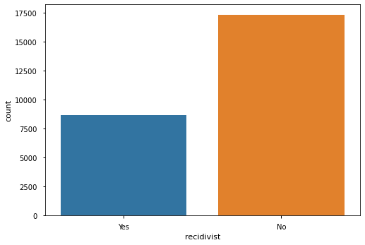
sns.catplot(data=df, x='age_number',hue='recidivist',kind='count')
<seaborn.axisgrid.FacetGrid at 0x7faa82286c40>
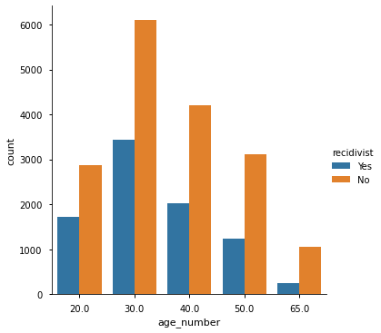
MODEL#
Train-Test-Split#
from sklearn.model_selection import train_test_split
y = df['recidivist'].map({'Yes':1,"No":0})
X = df.drop(columns=['recidivist',*drop_cols])
## Train test split
X_train, X_test, y_train,y_test = train_test_split(X,y,test_size=.3,
random_state=3210)#,stratify=y)
y_train.value_counts(normalize=True)
0 0.668058
1 0.331942
Name: recidivist, dtype: float64
Pipelnes and ColumnTransformer#
from sklearn.pipeline import Pipeline
from sklearn.impute import SimpleImputer
from sklearn.preprocessing import StandardScaler, OneHotEncoder
from sklearn.compose import ColumnTransformer
X_train.isna().sum()
crime_class 12
crime_type 0
crime_subtype 0
release_type 1252
super_dist 6681
target_pop 0
sex 2
race 25
age_number 2
dtype: int64
from sklearn import set_config
set_config(display='diagram')
## saving list of numeric vs categorical feature
num_cols = list(X_train.select_dtypes('number').columns)
cat_cols = list(X_train.select_dtypes('object').columns)
num_cols,cat_cols
(['age_number'],
['crime_class',
'crime_type',
'crime_subtype',
'release_type',
'super_dist',
'target_pop',
'sex',
'race'])
## create pipelines and column transformer
num_transformer = Pipeline(steps=[
('imputer',SimpleImputer(strategy='median')),
# ('scale',StandardScaler())
])
cat_transformer = Pipeline(steps=[
('imputer',SimpleImputer(strategy='constant',fill_value='MISSING')),
('encoder',OneHotEncoder(sparse=False,handle_unknown='ignore'))])
## COMBINE BOTH PIPELINES INTO ONE WITH COLUMN TRANSFORMER
preprocessor=ColumnTransformer(transformers=[
('num',num_transformer,num_cols),
('cat',cat_transformer,cat_cols)])
preprocessor
ColumnTransformer(transformers=[('num',
Pipeline(steps=[('imputer',
SimpleImputer(strategy='median'))]),
['age_number']),
('cat',
Pipeline(steps=[('imputer',
SimpleImputer(fill_value='MISSING',
strategy='constant')),
('encoder',
OneHotEncoder(handle_unknown='ignore',
sparse=False))]),
['crime_class', 'crime_type', 'crime_subtype',
'release_type', 'super_dist', 'target_pop',
'sex', 'race'])])['age_number']
SimpleImputer(strategy='median')
['crime_class', 'crime_type', 'crime_subtype', 'release_type', 'super_dist', 'target_pop', 'sex', 'race']
SimpleImputer(fill_value='MISSING', strategy='constant')
OneHotEncoder(handle_unknown='ignore', sparse=False)
## Fit preprocessing pipeline on training data and pull out the feature names and X_cols
preprocessor.fit(X_train)
## Use the encoder's .get_feature_names
cat_features = list(preprocessor.named_transformers_['cat'].named_steps['encoder']\
.get_feature_names(cat_cols))
X_cols = num_cols+cat_features
## Transform X_traian,X_test and remake dfs
X_train_df = pd.DataFrame(preprocessor.transform(X_train),
index=X_train.index, columns=X_cols)
X_test_df = pd.DataFrame(preprocessor.transform(X_test),
index=X_test.index, columns=X_cols)
## Tranform X_train and X_test and make into DataFrames
X_train_df
| age_number | crime_class_A Felony | crime_class_Aggravated Misdemeanor | crime_class_B Felony | crime_class_C Felony | crime_class_D Felony | crime_class_Felony - Enhanced | crime_class_MISSING | crime_class_Serious Misdemeanor | crime_class_Sex Offender | ... | target_pop_Yes | sex_Female | sex_MISSING | sex_Male | race_American Native | race_Asian or Pacific Islander | race_Black | race_Hispanic | race_MISSING | race_White | |
|---|---|---|---|---|---|---|---|---|---|---|---|---|---|---|---|---|---|---|---|---|---|
| 19732 | 50.0 | 0.0 | 0.0 | 0.0 | 0.0 | 0.0 | 0.0 | 0.0 | 0.0 | 1.0 | ... | 1.0 | 0.0 | 0.0 | 1.0 | 0.0 | 0.0 | 0.0 | 0.0 | 0.0 | 1.0 |
| 5802 | 40.0 | 0.0 | 0.0 | 0.0 | 0.0 | 1.0 | 0.0 | 0.0 | 0.0 | 0.0 | ... | 1.0 | 0.0 | 0.0 | 1.0 | 0.0 | 0.0 | 0.0 | 1.0 | 0.0 | 0.0 |
| 19945 | 40.0 | 0.0 | 0.0 | 0.0 | 0.0 | 0.0 | 1.0 | 0.0 | 0.0 | 0.0 | ... | 0.0 | 0.0 | 0.0 | 1.0 | 0.0 | 0.0 | 0.0 | 0.0 | 0.0 | 1.0 |
| 7031 | 40.0 | 0.0 | 0.0 | 0.0 | 0.0 | 1.0 | 0.0 | 0.0 | 0.0 | 0.0 | ... | 0.0 | 1.0 | 0.0 | 0.0 | 0.0 | 0.0 | 0.0 | 0.0 | 0.0 | 1.0 |
| 23418 | 30.0 | 0.0 | 1.0 | 0.0 | 0.0 | 0.0 | 0.0 | 0.0 | 0.0 | 0.0 | ... | 0.0 | 0.0 | 0.0 | 1.0 | 0.0 | 0.0 | 0.0 | 1.0 | 0.0 | 0.0 |
| ... | ... | ... | ... | ... | ... | ... | ... | ... | ... | ... | ... | ... | ... | ... | ... | ... | ... | ... | ... | ... | ... |
| 6527 | 30.0 | 0.0 | 0.0 | 1.0 | 0.0 | 0.0 | 0.0 | 0.0 | 0.0 | 0.0 | ... | 1.0 | 1.0 | 0.0 | 0.0 | 0.0 | 0.0 | 0.0 | 0.0 | 0.0 | 1.0 |
| 9967 | 50.0 | 0.0 | 0.0 | 0.0 | 0.0 | 1.0 | 0.0 | 0.0 | 0.0 | 0.0 | ... | 0.0 | 0.0 | 0.0 | 1.0 | 0.0 | 0.0 | 0.0 | 1.0 | 0.0 | 0.0 |
| 16747 | 30.0 | 0.0 | 1.0 | 0.0 | 0.0 | 0.0 | 0.0 | 0.0 | 0.0 | 0.0 | ... | 0.0 | 0.0 | 0.0 | 1.0 | 0.0 | 0.0 | 0.0 | 0.0 | 0.0 | 1.0 |
| 916 | 50.0 | 0.0 | 1.0 | 0.0 | 0.0 | 0.0 | 0.0 | 0.0 | 0.0 | 0.0 | ... | 1.0 | 0.0 | 0.0 | 1.0 | 0.0 | 0.0 | 0.0 | 0.0 | 0.0 | 1.0 |
| 11729 | 30.0 | 0.0 | 0.0 | 0.0 | 1.0 | 0.0 | 0.0 | 0.0 | 0.0 | 0.0 | ... | 0.0 | 1.0 | 0.0 | 0.0 | 0.0 | 0.0 | 0.0 | 0.0 | 0.0 | 1.0 |
18214 rows × 76 columns
Functions from Prior Classes#
## Write a fucntion to evalute the model
import sklearn.metrics as metrics
from sklearn.tree import plot_tree
## Modified version of our simple eval function from Topic 25 Part 2 Study Group
# - Added X_train and y_train for if we want scores for both train and test
def evaluate_classification(model, X_test_tf,y_test,cmap='Greens',
normalize='true',classes=None,figsize=(10,4),
X_train = None, y_train = None,):
"""Evaluates a scikit-learn binary classification model.
Args:
model (classifier): any sklearn classification model.
X_test_tf (Frame or Array): X data
y_test (Series or Array): y data
cmap (str, optional): Colormap for confusion matrix. Defaults to 'Greens'.
normalize (str, optional): normalize argument for plot_confusion_matrix.
Defaults to 'true'.
classes (list, optional): List of class names for display. Defaults to None.
figsize (tuple, optional): figure size Defaults to (8,4).
X_train (Frame or Array, optional): If provided, compare model.score
for train and test. Defaults to None.
y_train (Series or Array, optional): If provided, compare model.score
for train and test. Defaults to None.
"""
y_hat_test = model.predict(X_test_tf)
print(metrics.classification_report(y_test, y_hat_test,target_names=classes))
fig,ax = plt.subplots(ncols=2,figsize=figsize)
metrics.plot_confusion_matrix(model, X_test_tf,y_test,cmap=cmap,
normalize=normalize,display_labels=classes,
ax=ax[0])
curve = metrics.plot_roc_curve(model,X_test_tf,y_test,ax=ax[1])
curve.ax_.grid()
curve.ax_.plot([0,1],[0,1],ls=':')
fig.tight_layout()
plt.show()
## Add comparing Scores if X_train and y_train provided.
if (X_train is not None) & (y_train is not None):
print(f"Training Score = {model.score(X_train,y_train):.2f}")
print(f"Test Score = {model.score(X_test_tf,y_test):.2f}")
def evaluate_grid(grid,X_test,y_test,X_train=None,y_train=None):
print('The best parameters were:')
print("\t",grid.best_params_)
model = grid.best_estimator_
print('\n[i] Classification Report')
evaluate_classification(model, X_test,y_test,X_train=X_train,y_train=y_train)
def plot_importance(tree, X_train_df, top_n=20,figsize=(10,10)):
df_importance = pd.Series(tree.feature_importances_,
index=X_train_df.columns)
df_importance.sort_values(ascending=True).tail(top_n).plot(
kind='barh',figsize=figsize,title='Feature Importances',
ylabel='Feature',)
return df_importance
def show_tree(clf,figsize=(60,25),class_names=['Died','Survived'],
savefig=False,fname='titanic_tree.pdf',max_depth=None,):
fig,ax = plt.subplots(figsize=figsize)
plot_tree(clf,filled=True,rounded=True,proportion=True,
feature_names=X_train_df.columns,
class_names=class_names,ax=ax);
fig.tight_layout()
if savefig:
fig.savefig(fname, dpi=300,orientation='landscape')
return fig
Baseline Model (DummyClassifier)#
from sklearn.dummy import DummyClassifier
clf = DummyClassifier()
clf.fit(X_train_df,y_train)
evaluate_classification(clf,X_test_df,y_test,X_train=X_train_df,y_train =y_train)
precision recall f1-score support
0 0.66 0.67 0.66 5171
1 0.33 0.33 0.33 2635
accuracy 0.55 7806
macro avg 0.50 0.50 0.50 7806
weighted avg 0.55 0.55 0.55 7806
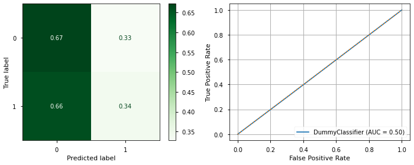
Training Score = 0.55
Test Score = 0.55
Q: What do we notice about the results of our dummy classifier?
Vanilla DecisionTree#
from sklearn.tree import DecisionTreeClassifier
tree = DecisionTreeClassifier(class_weight='balanced')
tree.fit(X_train_df,y_train)
evaluate_classification(tree,X_test_df,y_test,X_train=X_train_df,y_train =y_train)
precision recall f1-score support
0 0.72 0.58 0.65 5171
1 0.41 0.56 0.47 2635
accuracy 0.58 7806
macro avg 0.57 0.57 0.56 7806
weighted avg 0.62 0.58 0.59 7806
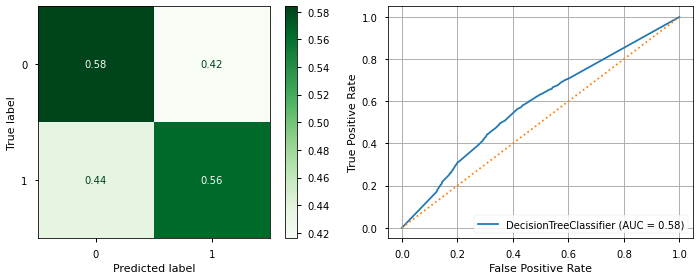
Training Score = 0.78
Test Score = 0.58
# how deep is tree?
tree.get_depth()
38
## Check feature importance
importances = plot_importance(tree,X_train_df,top_n=30)
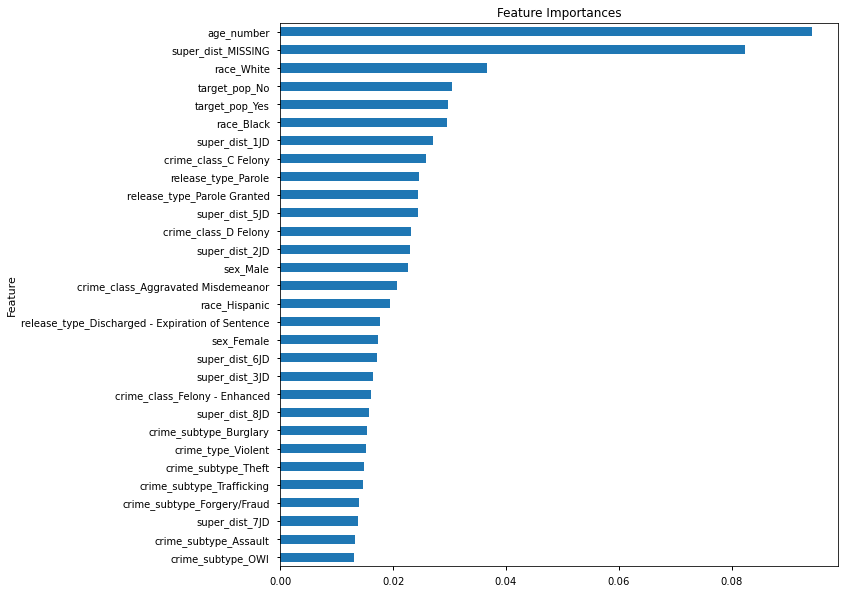
# show_tree(tree,savefig=True,fname='prisoners_tree.pdf',max_depth=5)
Hyperparameters Tuning#
max-depthmin_samples_leaf: The smallest number of samples that can be in a leaf (node)min_samples_split: The smallest number of samples in a leaf (node) before splitting itmax_features: Most features to consider when splitting
X_train_df.shape
(18214, 76)
## Import GridSearch
from sklearn.model_selection import GridSearchCV
## Instantiate classifier
tree = DecisionTreeClassifier()
## Set up param grid
param_grid = {'criterion':['gini','entropy'],
'max_depth':[None, 5,10,15,20],
'min_samples_leaf':[1,2,3],
'class_weight':['balanced'],
'max_features':['auto',10,30,70,None]}
## Instantiate GridSearchCV
grid_clf = GridSearchCV(tree,param_grid,scoring='f1_macro')
grid_clf.fit(X_train_df,y_train)
evaluate_grid(grid_clf,X_test_df,y_test,X_train=X_train_df,y_train =y_train)
The best parameters were:
{'class_weight': 'balanced', 'criterion': 'entropy', 'max_depth': 10, 'max_features': 70, 'min_samples_leaf': 2}
[i] Classification Report
precision recall f1-score support
0 0.76 0.59 0.67 5171
1 0.44 0.64 0.52 2635
accuracy 0.61 7806
macro avg 0.60 0.62 0.60 7806
weighted avg 0.65 0.61 0.62 7806
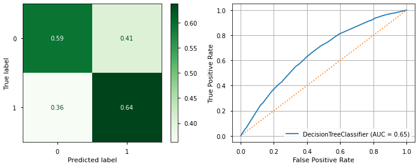
Training Score = 0.64
Test Score = 0.61
## Instantiate GridSearchCV
grid_clf = GridSearchCV(tree,param_grid,scoring='recall_macro')
grid_clf.fit(X_train_df,y_train)
evaluate_grid(grid_clf,X_test_df,y_test,X_train=X_train_df,y_train =y_train)
The best parameters were:
{'class_weight': 'balanced', 'criterion': 'entropy', 'max_depth': 10, 'max_features': None, 'min_samples_leaf': 1}
[i] Classification Report
precision recall f1-score support
0 0.78 0.55 0.64 5171
1 0.44 0.69 0.53 2635
accuracy 0.59 7806
macro avg 0.61 0.62 0.59 7806
weighted avg 0.66 0.59 0.60 7806
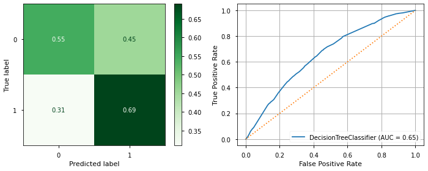
Training Score = 0.62
Test Score = 0.59
Bagging#
## Import bagging classifier
from sklearn.ensemble import BaggingClassifier
## Fit Classifier and get predictions
bag = BaggingClassifier()
bag.fit(X_train_df,y_train)
evaluate_classification(bag,X_test_df,y_test,X_train=X_train_df,y_train =y_train)
precision recall f1-score support
0 0.70 0.79 0.74 5171
1 0.45 0.34 0.39 2635
accuracy 0.64 7806
macro avg 0.58 0.57 0.57 7806
weighted avg 0.62 0.64 0.62 7806
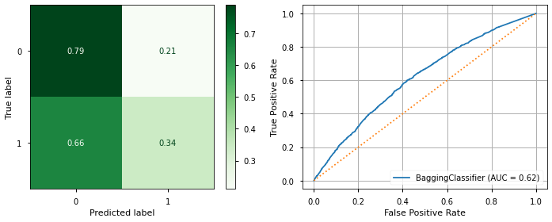
Training Score = 0.81
Test Score = 0.64
✍️ Dealing with Class Imbalance with encoded feature via SMOTENC#
AKA when there’s no
class_weightargument and you have one hot encoded features
SMOTENC is another SMOTE class from imblearn#
https://imbalanced-learn.org/dev/references/generated/imblearn.over_sampling.SMOTENC.html
It is designed for categorical features.
It needs a list of True/False for every feature (True=one hot encoded, False=numerical)_
from imblearn.over_sampling import SMOTE,SMOTENC
X_train_df
| age_number | crime_class_A Felony | crime_class_Aggravated Misdemeanor | crime_class_B Felony | crime_class_C Felony | crime_class_D Felony | crime_class_Felony - Enhanced | crime_class_MISSING | crime_class_Serious Misdemeanor | crime_class_Sex Offender | ... | target_pop_Yes | sex_Female | sex_MISSING | sex_Male | race_American Native | race_Asian or Pacific Islander | race_Black | race_Hispanic | race_MISSING | race_White | |
|---|---|---|---|---|---|---|---|---|---|---|---|---|---|---|---|---|---|---|---|---|---|
| 19732 | 50.0 | 0.0 | 0.0 | 0.0 | 0.0 | 0.0 | 0.0 | 0.0 | 0.0 | 1.0 | ... | 1.0 | 0.0 | 0.0 | 1.0 | 0.0 | 0.0 | 0.0 | 0.0 | 0.0 | 1.0 |
| 5802 | 40.0 | 0.0 | 0.0 | 0.0 | 0.0 | 1.0 | 0.0 | 0.0 | 0.0 | 0.0 | ... | 1.0 | 0.0 | 0.0 | 1.0 | 0.0 | 0.0 | 0.0 | 1.0 | 0.0 | 0.0 |
| 19945 | 40.0 | 0.0 | 0.0 | 0.0 | 0.0 | 0.0 | 1.0 | 0.0 | 0.0 | 0.0 | ... | 0.0 | 0.0 | 0.0 | 1.0 | 0.0 | 0.0 | 0.0 | 0.0 | 0.0 | 1.0 |
| 7031 | 40.0 | 0.0 | 0.0 | 0.0 | 0.0 | 1.0 | 0.0 | 0.0 | 0.0 | 0.0 | ... | 0.0 | 1.0 | 0.0 | 0.0 | 0.0 | 0.0 | 0.0 | 0.0 | 0.0 | 1.0 |
| 23418 | 30.0 | 0.0 | 1.0 | 0.0 | 0.0 | 0.0 | 0.0 | 0.0 | 0.0 | 0.0 | ... | 0.0 | 0.0 | 0.0 | 1.0 | 0.0 | 0.0 | 0.0 | 1.0 | 0.0 | 0.0 |
| ... | ... | ... | ... | ... | ... | ... | ... | ... | ... | ... | ... | ... | ... | ... | ... | ... | ... | ... | ... | ... | ... |
| 6527 | 30.0 | 0.0 | 0.0 | 1.0 | 0.0 | 0.0 | 0.0 | 0.0 | 0.0 | 0.0 | ... | 1.0 | 1.0 | 0.0 | 0.0 | 0.0 | 0.0 | 0.0 | 0.0 | 0.0 | 1.0 |
| 9967 | 50.0 | 0.0 | 0.0 | 0.0 | 0.0 | 1.0 | 0.0 | 0.0 | 0.0 | 0.0 | ... | 0.0 | 0.0 | 0.0 | 1.0 | 0.0 | 0.0 | 0.0 | 1.0 | 0.0 | 0.0 |
| 16747 | 30.0 | 0.0 | 1.0 | 0.0 | 0.0 | 0.0 | 0.0 | 0.0 | 0.0 | 0.0 | ... | 0.0 | 0.0 | 0.0 | 1.0 | 0.0 | 0.0 | 0.0 | 0.0 | 0.0 | 1.0 |
| 916 | 50.0 | 0.0 | 1.0 | 0.0 | 0.0 | 0.0 | 0.0 | 0.0 | 0.0 | 0.0 | ... | 1.0 | 0.0 | 0.0 | 1.0 | 0.0 | 0.0 | 0.0 | 0.0 | 0.0 | 1.0 |
| 11729 | 30.0 | 0.0 | 0.0 | 0.0 | 1.0 | 0.0 | 0.0 | 0.0 | 0.0 | 0.0 | ... | 0.0 | 1.0 | 0.0 | 0.0 | 0.0 | 0.0 | 0.0 | 0.0 | 0.0 | 1.0 |
18214 rows × 76 columns
num_cols
['age_number']
cat_features[:5]
['crime_class_A Felony',
'crime_class_Aggravated Misdemeanor',
'crime_class_B Felony',
'crime_class_C Felony',
'crime_class_D Felony']
## Save list of trues and falses for each cols
smote_feats = [False]*len(num_cols) +[True]*len(cat_features)
# smote_feats
smote = SMOTENC(smote_feats)
X_train_sm,y_train_sm = smote.fit_sample(X_train_df,y_train)
y_train_sm.value_counts()
1 12168
0 12168
Name: recidivist, dtype: int64
Retrain BaggingClassifer on resampled data#
bag = BaggingClassifier()
bag.fit(X_train_sm,y_train_sm)
evaluate_classification(bag,X_test_df,y_test,X_train=X_train_sm,y_train =y_train_sm)
precision recall f1-score support
0 0.71 0.68 0.70 5171
1 0.43 0.46 0.44 2635
accuracy 0.61 7806
macro avg 0.57 0.57 0.57 7806
weighted avg 0.62 0.61 0.61 7806
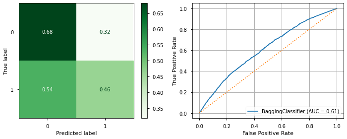
Training Score = 0.83
Test Score = 0.61
RandomForestClassifier#
## Import Random Forest
from sklearn.ensemble import RandomForestClassifier
## Fit Random Forest
rf = RandomForestClassifier(class_weight='balanced')
rf.fit(X_train_df, y_train)
evaluate_classification(rf,X_test_df,y_test,X_train=X_train_df,y_train =y_train)
precision recall f1-score support
0 0.72 0.69 0.71 5171
1 0.44 0.47 0.45 2635
accuracy 0.62 7806
macro avg 0.58 0.58 0.58 7806
weighted avg 0.62 0.62 0.62 7806
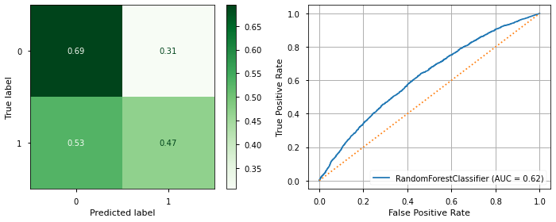
Training Score = 0.81
Test Score = 0.62
## get feature importance
plot_importance(rf,X_train_df)
age_number 0.219983
crime_class_A Felony 0.000045
crime_class_Aggravated Misdemeanor 0.022542
crime_class_B Felony 0.011269
crime_class_C Felony 0.023713
...
race_Asian or Pacific Islander 0.004289
race_Black 0.031780
race_Hispanic 0.015973
race_MISSING 0.000699
race_White 0.035067
Length: 76, dtype: float64
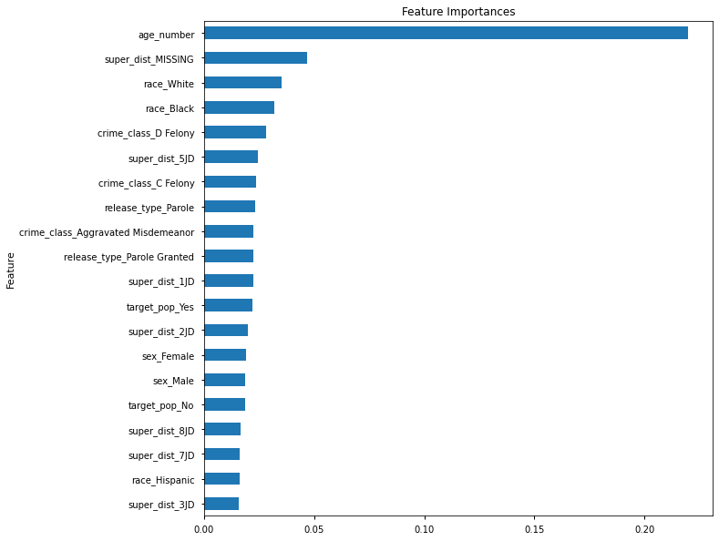
## Try using smote instead of class_weight
rf = RandomForestClassifier()
rf.fit(X_train_sm, y_train_sm)
evaluate_classification(rf,X_test_df,y_test,X_train=X_train_sm,y_train =y_train_sm)
precision recall f1-score support
0 0.72 0.68 0.70 5171
1 0.44 0.48 0.46 2635
accuracy 0.62 7806
macro avg 0.58 0.58 0.58 7806
weighted avg 0.63 0.62 0.62 7806
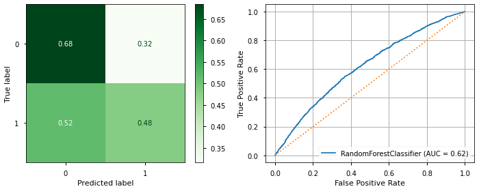
Training Score = 0.83
Test Score = 0.62
ExtraTrees Algorithm#
Instead of always choosing the optimal branching path, we choose a branching path at random.
## Import and fit an ExtraTreesClassifier
from sklearn.ensemble import ExtraTreesClassifier
etrees = ExtraTreesClassifier(class_weight='balanced')
etrees.fit(X_train_df, y_train)
evaluate_classification(etrees,X_test_df,y_test,X_train=X_train_df,y_train =y_train)
precision recall f1-score support
0 0.73 0.62 0.67 5171
1 0.42 0.55 0.48 2635
accuracy 0.59 7806
macro avg 0.58 0.58 0.57 7806
weighted avg 0.63 0.59 0.60 7806
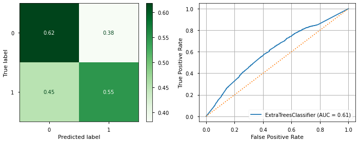
Training Score = 0.78
Test Score = 0.59
XGBoost#
“
XGBoostis a stand-alone library that implements popular gradient boosting algorithms in the fastest, most performant way possible. There are many under-the-hood optimizations that allow XGBoost to train more quickly than any other library implementations of gradient boosting algorithms:
For instance, XGBoost is configured in such a way that it parallelizes the construction of trees across all your computer’s CPU cores during the training phase.
It also allows for more advanced use cases, such as distributing training across a cluster of computers, which is often a technique used to speed up computation.
The algorithm even automatically handles missing values!”
## import xgboost RF
from xgboost import XGBRFClassifier,XGBClassifier
XGBClassifier#
## Fit and Evaluate single tree
xgg_clf = XGBClassifier()
xgg_clf.fit(X_train_df, y_train)
evaluate_classification(xgg_clf,X_test_df,y_test,X_train=X_train_df,y_train =y_train)
precision recall f1-score support
0 0.70 0.87 0.78 5171
1 0.53 0.28 0.36 2635
accuracy 0.67 7806
macro avg 0.61 0.57 0.57 7806
weighted avg 0.64 0.67 0.64 7806
Training Score = 0.73
Test Score = 0.67
## single boosted tree with smoted data
xgg_clf = XGBClassifier()
xgg_clf.fit(X_train_sm, y_train_sm)
evaluate_classification(xgg_clf,X_test_df,y_test,X_train=X_train_sm,y_train =y_train_sm)
precision recall f1-score support
0 0.74 0.68 0.71 5171
1 0.46 0.54 0.50 2635
accuracy 0.63 7806
macro avg 0.60 0.61 0.61 7806
weighted avg 0.65 0.63 0.64 7806
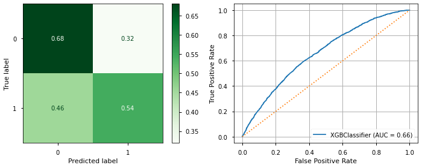
Training Score = 0.73
Test Score = 0.63
XGBRFClassifier#
## fit on smoted dta
xgb_rf = XGBRFClassifier()
xgb_rf.fit(X_train_sm, y_train_sm)
print(xgb_rf.score(X_train_sm,y_train_sm))
print(xgb_rf.score(X_test_df,y_test))
# y_hat_test = xgb_rf.predict(X_test)
# evaluate_model(y_test,y_hat_test,X_test,xgb_rf)
evaluate_classification(xgb_rf,X_test_df,y_test,X_train=X_train_sm,y_train =y_train_sm)
0.6428747534516766
0.609018703561363
precision recall f1-score support
0 0.77 0.58 0.66 5171
1 0.45 0.66 0.53 2635
accuracy 0.61 7806
macro avg 0.61 0.62 0.60 7806
weighted avg 0.66 0.61 0.62 7806
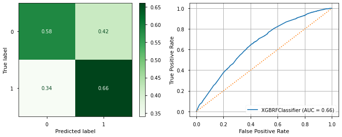
Training Score = 0.64
Test Score = 0.61
## setup param grid for gridsearch
xgbrf_grid = {'colsample_bynode': 0.8, 'learning_rate': 1,
'max_depth': 5, 'num_parallel_tree': 100,
'objective': 'binary:logistic', 'subsample': 0.8}
xrf_clf = XGBRFClassifier(**xgbrf_grid)
xrf_clf.fit(X_train_sm,y_train_sm)
evaluate_classification(xrf_clf,X_test_df,y_test,X_train=X_train_sm,y_train =y_train_sm)
precision recall f1-score support
0 0.77 0.57 0.66 5171
1 0.44 0.67 0.53 2635
accuracy 0.61 7806
macro avg 0.61 0.62 0.60 7806
weighted avg 0.66 0.61 0.62 7806
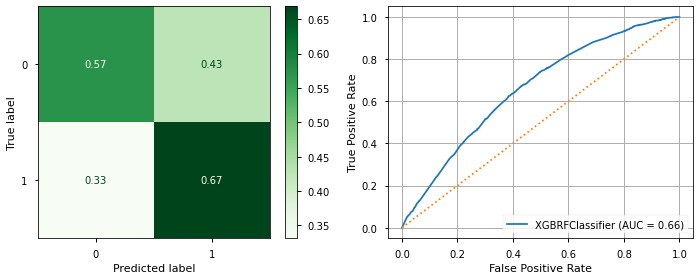
Training Score = 0.64
Test Score = 0.61
plot_importance(xrf_clf,X_train_df)
age_number 0.054114
crime_class_A Felony 0.000000
crime_class_Aggravated Misdemeanor 0.007426
crime_class_B Felony 0.003377
crime_class_C Felony 0.001623
...
race_Asian or Pacific Islander 0.000000
race_Black 0.002309
race_Hispanic 0.038932
race_MISSING 0.000000
race_White 0.003704
Length: 76, dtype: float32
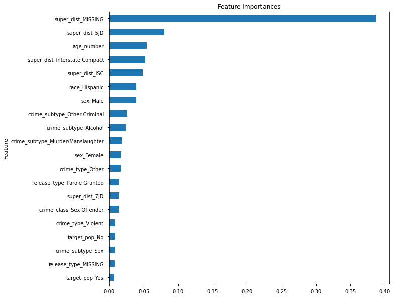
✍️ Using Cross Validation (besides GridSearchCV)#
CV Workflow:#
Train/Test split
Create a model.
Apply Cross Validation with the training data.
Evaluate Cross validation scores:
If not happy with the scores:
Try different model/hyperparameters.
If happy with scores/performance:
Train an individual model (not-cv) on the training data and evaluate with the test data.
If individual model performs well on test data (isn’t overfit) and you are planning to deploy the model:
You would re-train the model on the entire combined data set (X =X_train+X_test, y=y_train+y_test) before pickling/saving the model.
from sklearn.model_selection import cross_validate,cross_val_score,cross_val_predict
Cross validation functions from sklearn.model_selection:
cross_validate:returns dict of K-fold scores for the training data, including the training times.
cross_val_score:returns the K-fold validation scores for the K-fold’s test-splits
cross_val_predict:returns predictions from the cross validated model.
## Create, fit, and evaluate a vanilla DecisionTreeClassifier
## cross_validate
## cross_val_score
## cross_val_predict
## If happy with results, train an individual model and evaluate with test data
## if happy with train/test split results, can re-train model on entire dataset
Saving Models#
Guide on Saving Models:
With Pickle#
import pickle
s = pickle.dumps(clf)
type(s)
bytes
loaded_s = pickle.loads(s)
loaded_s
DummyClassifier()
evaluate_classification(loaded_s,X_test_df,y_test)
precision recall f1-score support
0 0.67 0.67 0.67 5171
1 0.34 0.34 0.34 2635
accuracy 0.56 7806
macro avg 0.50 0.50 0.50 7806
weighted avg 0.56 0.56 0.56 7806
With joblib (sklearn’s preferred method)#
import joblib
joblib.dump(clf, 'model.joblib')
['model.joblib']
clf_jb = joblib.load('model.joblib')
clf_jb
DummyClassifier()
evaluate_classification(clf_jb,X_test_df,y_test)
precision recall f1-score support
0 0.66 0.66 0.66 5171
1 0.34 0.34 0.34 2635
accuracy 0.55 7806
macro avg 0.50 0.50 0.50 7806
weighted avg 0.55 0.55 0.55 7806
APPENDIX#
✍️ Stacked Models#
StackingClassifier:VotingClassifier:
if there’s time: combine several of the best models into one meta-classifier#
from sklearn.ensemble import StackingClassifier,VotingClassifier
Other Packages#
Catboost: https://catboost.ai/